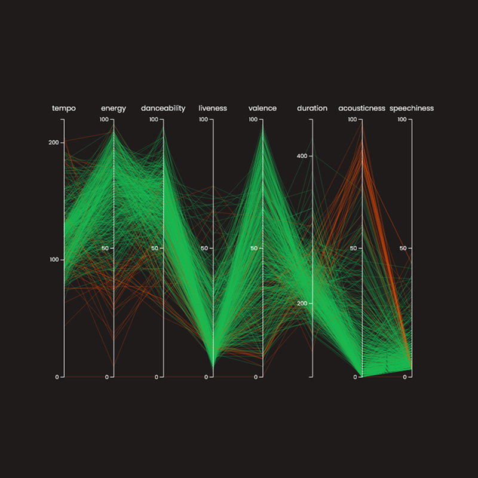

Monte Carlo Ray Tracer
A Monte Carlo ray tracer developed as part of the course Advanced Global Illumination. The
renderer was written in C++, utilizes multithreading, and implements a simple photon
mapping scheme. More details can be found in the report.

Spotify Visualization
A web application that visualizes song attributes and allows the user to find interesting
patterns between different attributes. It was developed as part of the course Information
Visualization and was written in JavaScript with D3.js.
DomeDagen
A multiplayer game developed for the dome at Visualiseringscenter C. The game consisted of
three main parts: the main game application distributed over multiple rendering computers,
a web client functioning as a game controller, and a web server.
Face Recognition
A face recognition application developed in MATLAB for the course Advanced Image
Processing. The application includes face detection, normalization, and identification
based on the Fisherfaces method.